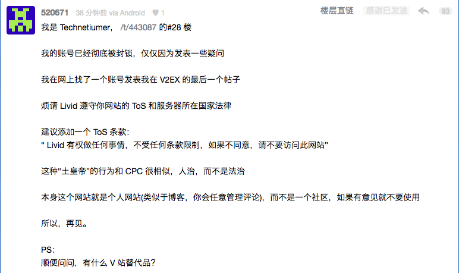
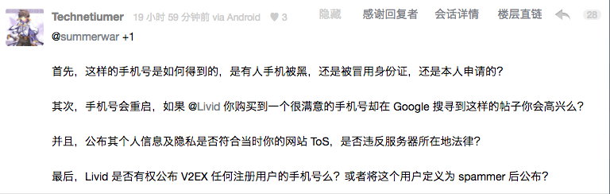
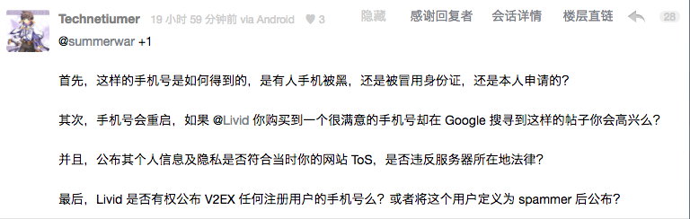
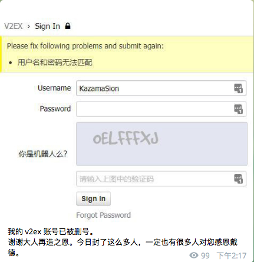
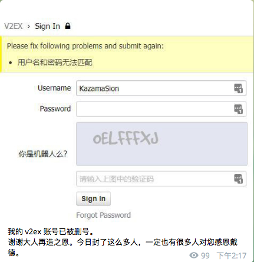
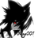
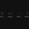

被提醒到：这毕竟是一个个人站，说你没了你就没了，降权就降权，无处考证，无论之前是否有做出过有贡献的讨论
所以打算多留点后路，有推荐吗？
所以打算多留点后路，有推荐吗？
#leaveV2EX
第 1 条附言 · 21 小时 11 分钟前
补充一下：实际上内容还是想提醒一下判决的问题
判断广告，封禁，公告没问题，这不是重点
但是因此张贴隐私信息是否正确？
张贴这类信息是否能够达到目的？（减少 /消除广告）
且不说相关规定，也请各位看官冷静对待
维护社区的心情是可以理解的 #34
目前就这样的情景而言
你，作为社区的一员，是否就是没有一丝担心？
有的话，来讨论一下吧
判断广告，封禁，公告没问题，这不是重点
但是因此张贴隐私信息是否正确？
张贴这类信息是否能够达到目的？（减少 /消除广告）
且不说相关规定，也请各位看官冷静对待
维护社区的心情是可以理解的 #34
目前就这样的情景而言
你，作为社区的一员，是否就是没有一丝担心？
有的话，来讨论一下吧
第 2 条附言 · 11 小时 33 分钟前
看了一下，微凉 后续内容请结合原帖新回复食用 目前结果：
- 发送信息的人就是 Spamer，而公布这些人的信息没有问题
- （可能的）言语威胁到站务运行的人会被封禁+登陆自动封IP
而站长似乎也没有对 t/443087 34楼进行过正面回复
希望各位客官以后注意一下言行，以后避免被判断威胁V2运行封号甚至被公布信息
原因：
- Spamer 没权利享受保护权利/我们只关心事实
- 站长付出了很多精力维护
- 反对的人 Naive，还需要学习一个，你开心就好
下面回复的抱歉没精力一一回复啦，长字数点个感谢避免“下个ID见”积累的铜板都没了
最后，回归一下正题吧：这帖子在问有什么类似的产品或者社区，做点后手准备也还是有必要的吧
然后就是SEO，毕竟让后来的投放者注意一下目前的面向人群也是有意义的吧
#广告 #广告投放 #如何投放广告 #Advertisement
第 3 条附言 · 8 小时 26 分钟前
补充 2
#72 楼 @Tony2ee 账号似乎被封锁
@Tony1ee 账号似乎很快遭到了同样的待遇
希望后面的人回复前仔细想一下：
没人说过不反 Spam，非要扯热度关注度和“你这么维护黑产 XXX ”的话，你是否也想过你的信息也是如此？
原帖下也有人回复了，你账号泄漏发送 Spam 信息被公布，是否也会公布？
站长说的是“我对老用户和那种刚注册几天的新号，处理方式肯定会不同。”
所以，你的信息的使用以及判决的标准是这样确定的，请各位了解
最后，问题跟随出来的另外一个问题：
@ovear （因为说“要举报本站站长非法公布信息”被站长以干扰站点运作封禁，站长确认）
@Tony2ee （目前似乎被封禁，登陆 502，站长未确认）
请各位，如果可以，重新审阅一下他们的发言，从你的角度理解一下 V2 言辞过激？
#72 楼 @Tony2ee 账号似乎被封锁
@Tony1ee 账号似乎很快遭到了同样的待遇
希望后面的人回复前仔细想一下：
没人说过不反 Spam，非要扯热度关注度和“你这么维护黑产 XXX ”的话，你是否也想过你的信息也是如此？
原帖下也有人回复了，你账号泄漏发送 Spam 信息被公布，是否也会公布？
站长说的是“我对老用户和那种刚注册几天的新号，处理方式肯定会不同。”
所以，你的信息的使用以及判决的标准是这样确定的，请各位了解
最后，问题跟随出来的另外一个问题：
@ovear （因为说“要举报本站站长非法公布信息”被站长以干扰站点运作封禁，站长确认）
@Tony2ee （目前似乎被封禁，登陆 502，站长未确认）
请各位，如果可以，重新审阅一下他们的发言，从你的角度理解一下 V2 言辞过激？
第 4 条附言 · 5 小时 57 分钟前
补充3
@Technetiumer 账号似乎被封禁

原文


@KazamaSion 账号似乎无法登陆，本人公告如下


其实这是我没有想到的，毕竟：t/443087#66
Sion后续还有更多内容，欢迎自行前往阅读，讨论过多不方便排版敬请谅解
至此，态度已经算是相当明显，不便多说，希望各位自己心中有数即可。 #84 楼也许有点帮助，可以看看
最后，RT，收集到的信息有：
- http://bbs.lirencollege.xyz/ 不需要手机和邮箱，只是处于比较早期 #31
- https://hacpai.com #74
论坛内早期还有一些类似的推送，寻找后会添加。如果你还能读到这里，感谢你的耐心，也感谢所有在这里发表了自己想法和讨论的人。（至少双方的 Block 列表都为此丰富了不少（不
第 5 条附言 · 2 小时 24 分钟前
相关知乎问答：
https://www.zhihu.com/question/270687757
https://www.zhihu.com/question/270688255
Sion 的后续回复，算是对各位目前每一个观点都有作出回应，可以看看：
https://www.zhihu.com/question/270687757/answer/355878537
至此，大家可以用脚投票了
https://www.zhihu.com/question/270687757
https://www.zhihu.com/question/270688255
Sion 的后续回复，算是对各位目前每一个观点都有作出回应，可以看看：
https://www.zhihu.com/question/270687757/answer/355878537
至此，大家可以用脚投票了
121 回复 |
直到 2018-04-01 19:42:50 +08:00
1
mokeyjay 22 小时 57 分钟前
♥ 1
six six six
|
 |
2
NimaQu 22 小时 54 分钟前 via Android
♥ 2
下个 id 见
|
|  |
3
kn007 22 小时 51 分钟前
♥ 1
标签好评
|
4
WildCat 22 小时 51 分钟前
♥ 2
1. 首先你应该多去 nga 感受下。
2. 其次我个人认为，那根本不算隐私，参见我在 43 楼的回复。 3. 你去 reddit、hn 玩，一样有机会没了。 |
5
imhx233 22 小时 50 分钟前 via iPhone
♥ 3
666 国内和 V2EX 差不多的应该没有了吧 如果不介意低端一点的话可以考虑
chongbuluo.com
|
7
WildCat 22 小时 48 分钟前
♥ 3
@lsylsy2
建议你先阅读我的回复再说。
手机和邮箱可能被公开 的前提是你所谓的“隐私权”是建立在侵犯其他方的权益基础上的，在这种情况下就没有隐私权了。 |
9
Cambrian07 22 小时 45 分钟前 via Android
♥ 1
@WildCat
我认为 lz 是对那个帖子下面的回复比较敏感的，就是“个人站点”那个
|
10
AlwaysBehave 22 小时 44 分钟前
|
11
brickyang 22 小时 44 分钟前 via iPhone
♥ 1
任何地方只要有管理员都可以说你没了你就没了，可能只有区块链能拯救你。
|
12
AlwaysBehave 22 小时 44 分钟前
@WildCat
#8 那你很适合当 V2 的下一任站长
|
13
lsylsy2 22 小时 43 分钟前
♥ 1
|
14
WildCat 22 小时 42 分钟前
♥ 1
@AlwaysBehave
1. 封禁和降权在几乎所有的社区（无论墙内墙外）都不是透明的。NGA 更是。 2. 你的逻辑是“封禁不应该公布个人信息”，我赞同。但是目前的操作是，封禁的人违反了法律（某种意义上），违反了版规（ spamming ），浪费了大家时间，在这种情况下，隐私权不受保护了。 |
15
Tony2ee 22 小时 39 分钟前
♥ 4
我想大家和 V2EX 的某管理者都清楚，V2EX 的优势并不是在于它的网站设计美感、它的内容节点分布合理性中立性、它的连通性的质量、亦或是它的管理策略的公开透明和权威 /公信力、甚至是管理员邮件回复的及时程度。
真正让 V2EX 成为 V2EX 的是用户，用户群。 几年来在 V2 认识了不少朋友，学到了不少的姿势，陪我度过了许多时光，我对此很感激。 但是作为平台，如果做不好平台，那么用户的流失自然也就无法避免，倘若没有了用户，没有了流量，没有了广告，V2EX 的衰亡也就不会远了相信 Livid 自己也明白这一点。 战略 mark，看看有什么替代品。 |
16
WildCat 22 小时 39 分钟前
♥ 1
@lsylsy2
1. 人脸和手机号（邮箱）不要混为一谈，你这是诡辩。 2. 抓毒贩不露脸（戴头套）可不见得是保护隐私权，更重要的是保护缉毒警察。 3. 程序正义不正义这么大的词我真的不会说，不过我觉得对于这件事都上纲上线到这种程度，某些人怕是没法在某个地方生活下去了。 |
17
huiyifyj 22 小时 38 分钟前
♥ 1
我依稀记得之前发了个关于$$的 PAC 问题，没过多久就没了。何况当时我还没扯过$$。
|
18
WildCat 22 小时 38 分钟前
♥ 1
|
19
liwanglin12 22 小时 37 分钟前
♥ 1
@WildCat
我想他们在这种情况下不应该被视为放弃自身隐私权。
这种事情一码归一码，你 SPAM，侵犯了站长的权益，那么 SPAMMER 应该为此承担法律上规定其应该承担的责任，但是这一责任并不包括放弃或让渡自己的隐私权。 > 隐私权是公民依法享有拒绝、排斥任何未经法律批准的监视、窥探和防止个人私生活秘密、个人信息(个人数据)被披露的权利。 您所援引的 iask 回答中关于隐私权的描述语句，我未能在任何中国现行法律法规上查找到，因此不应被视为有效的规约。 |
 |
20
feverzsj 22 小时 36 分钟前
♥ 1
v2 虽然挺 low，但是国内只有更 low 的，所以走好不送
|
21
AlwaysBehave 22 小时 35 分钟前
@WildCat
#14 好，你说封禁降权不透明，承认
但是这不意味着完全一点提示都没有，社区封禁降权对当事人应该是可见的，然而这里只有封禁，而且就是甩一脸的 403 ？ 也就不说公开小黑屋的 B 站（如果你说不算论坛的话） 那就也不说 v2 一开始是否有说过信息是否会这样用之类的没意义话 你给一些 SPAM 会公布注册信息的论坛，我好避开雷区 |
22
lsylsy2 22 小时 34 分钟前 via Android
♥ 1
@WildCat
1 邮箱比较容易马甲就算了，手机为何不能算？实名制，和个人高度绑定，难以更换。
2 你可能有点误解，我说的是给犯罪嫌疑人戴头套，不是警察戴。 3 这个我就没办法了，观念不同。没有规矩不成方圆。 |
23
WildCat 22 小时 34 分钟前
@liwanglin12
那请你找到哪部现行法律描述隐私权的吧
|
24
Tony2ee 22 小时 33 分钟前
♥ 2
今天 V2EX 面临的是信任危机，尤其是今天的那个热帖中，当大家都认清了站长 [在网站上写的是一套] 但是 [做的可能是另一套] 的时候
|
25
WildCat 22 小时 32 分钟前
|
27
liwanglin12 22 小时 26 分钟前
♥ 1
@WildCat
#23 你可以简单的通过 Google 找到与隐私权相关法律的内容。http://lmgtfy.com/?q=%E9%9A%90%E7%A7%81%E6%9D%83
也可以查看 Wikipedia https://zh.wikipedia.org/wiki/%E9%9A%90%E7%A7%81%E6%9D%83#_%E4%B8%AD%E5%8D%8E%E4%BA%BA%E6%B0%91%E5%85%B1%E5%92%8C%E5%9B%BD 以及 MBALib http://wiki.mbalib.com/wiki/%E9%9A%90%E7%A7%81%E6%9D%83 说一句题外话，原 @ovear 质疑的内容其实是 - 根据国内法规无权、（根据道德不应该（也许)）泄露手机号 - SPAMMER 的手机号并不一定是自己的，公布出来只有可能给他现在或者将来的实际机主造成伤害 所以公开手机号真的没有什么用，只有坏处。 |
28
AlwaysBehave 22 小时 25 分钟前
|
29
XinLake 22 小时 19 分钟前 via Android
♥ 1
内容是关键，国内专业的社区几乎没有，有专业点的人社区非常少。
stackoverflow、reddit、xda 都有挺专业的人，但是访问不稳定啊，有啥办法。 |
31
marenight 22 小时 14 分钟前 via iPhone
♥ 1
http://bbs.lirencollege.xyz/
不需要手机和邮箱，只是处于比较早期
|
32
WildCat 22 小时 14 分钟前
♥ 1
@liwanglin12
所以只是也许。我的逻辑是，做这些事情的原因不是有公布你们隐私的癖好，反而节约大家时间，喝止这些 spamming 行为。起码我是认同这么做的初心的。如果“手机号并不一定是自己的”，公开更有利于保护受害人的权益——否则受害人还不知道自己名下手机号被滥用。试想如果有人拿你手机号发了不和谐言论回你有什么后果。“根据国内法规无权、（根据道德不应该（也许)）泄露手机号 ”这句话应该改为“根据国内法规是否有权、（根据道德不应该（也许)）公布可能被黑产盗用、用作发布违法或者违反道德信息的手机号 ” @AlwaysBehave 你如果有尊重我，看我在那个帖子的回帖的话，我也说了我是洗。谢谢。 |
33
AlwaysBehave 22 小时 12 分钟前
♥ 1
@WildCat
#32 抱歉，我看了
所以我才说不要浪费太多时间看 |
34
liwanglin12 22 小时 9 分钟前
♥ 2
@WildCat
#32 这种公开按照法规恐怕是不可行的，ovear 引用的网络安全法很好的说明了这一点。不过我理解您的观点，大家考虑的出发点不同。
|
![]() |
35
nflush 21 小时 51 分钟前
你们说的隐私是指假学位那些人的手机号吗？他们的 spam 里面不是自己报的手机号吗？
|
36
lsylsy2 21 小时 48 分钟前 via Android
♥ 1
@nflush
公开的是用来注册账号的手机号。
有理由相信这不是实际 spammer 自己的号，之后可能会被立刻丢弃并二次分发给无辜的人；甚至不能排除这是盗窃他人得到的号码。 |
 |
37
goodboy532 20 小时 31 分钟前
♥ 3
已 block @WildCat
说真的，论坛规则里面我是找不到一条会公布用户手机号和邮箱的说明，然而还是做了。 那么楼主你发这个帖子，也有可能被以莫须有、事后很合理的解释来同样对待。 从 V2 某些人的回答来看，我感觉隐私保护在中国缺失非常不受重视。 之前我有一次不清楚论坛规则就发了个良心云的上车链接，被降权+临时封 ip，我认了。毕竟站长有事先说明，只不过我没仔细看，触犯了规则就要接受惩罚，很合理。但是未事先声明就公布隐私这样的行为，在我看来跟某党的嘴脸差不多，真正有独立思考的人，是不愿意为之洗地的。 言尽于此，也 mark 一下看看有没更多的选择。毕竟 QQ、微信被监视了，我们还有 telegram，不是么？ |
 |
38
CaptainWho 20 小时 23 分钟前 via iPhone
♥ 1
我也不知道一群有技术的人为什么要屈在这个很多设计不合理的地方
|
39
AlwaysBehave 20 小时 16 分钟前 via Android
@CaptainWho
这就是氛围吧
所以其实我不到不得已大约也不会选退路 @goodboy532 没错，然而这是首次 Spam 公开信息吧 总是要有人点出来，没办法，已经有一个被 KO 了，只是不想这样不了了之 |
40
WildCat 20 小时 10 分钟前
♥ 2
@goodboy532
欢迎 block。有本事留个你大号 ID 看看你都创造了什么有价值的内容。
💊的原因只有一个，一群懦夫只会找软柿子捏。 如果未来某一天这个网站不存在了，请不要怀念宽容度这么高的管理员——我不信你在墙内简体中文社区能找到第二个允许你保留反对管理组意见这么久的社区。 |
41
WildCat 20 小时 9 分钟前
@goodboy532
圣母可以，可怕的是毫无底线的圣母。
|
42
Livid
20 小时 0 分钟前
♥ 6
真的，如果有人亲身试过把服务器放到国内（为了最快的速度），然后办理各种手续（为了能够在国内被正常访问），然后在各种政府环节留全自己的手机号，自己的手机号 7x24 小时待机（为了能够在国内持续可以被正常访问），恐怕就会知道这件事情在当下（ 2018 年 3 月）有多难。
而那些走得更远的公司，就算是在公司内部都成立党支部了，遇到事情的时候照样被下线一周。 我上面说的这些东西，毫无意义。你们最好也从来不需要去体会。 年轻的时候多读点书多积累点见识，争取长大之后不要让自己陷在一个 CRUD 和政府监管的泥潭里吧。 |
45
lsylsy2 19 小时 3 分钟前
♥ 1
@Livid
我并没有偷换概念，而是我们对概念的理解可能不太相同。我不认为黑产使用的手机号就不是手机号。并且放弃尝试通过讨论统一意见。
本帖截止 32 楼的内容已在百度取证进行证据保全，地址见 http://quzheng.baidu.com/s/qia2Er 将来如有人有需求可联系我。 |
46
ZyZyZzz 18 小时 56 分钟前 via Android
♥ 1
@WildCat
2013 年的老用户了，类似矛盾至少爆发了三次你捋一捋就能想起来。矛盾持续不能解决，反对的人流失的越快。以后不要说保留反对声音了，就没有反对声音可以用来保留。 而且你所看到的宽容是有选择的宽容，ovear 这种反对声音甩手就是一封就叫宽容了？ ovear 可不是什么劣质用户，算是有些贡献的和你同年加入的老用户了。这样下去谁还愿意贡献社区？ 说到这里，正好说明下请不要用“这里是个人站，站主想怎样就怎么”类似的观点回应我。调侃就算了还真当是个人站了？ UGC 的站点内容是站长+我们用户生产的理应属于所有贡献者，而且现实一点网站实质上都属于国家受本国法律约束只是没执行到位才让我们尚有宽容可享。非要伤了贡献者的心搞到跳反举报让各种法规强制落实夺走仅剩的宽容甚至站点才肯罢休？（今天帖子里已经有表露这种意向了） 最后无论是否站长看到，额外想说一点：说那些信息垃圾可以，没任何人会在这点上争论。但是“这些垃圾的隐私”这种暗指人的话不可说，不应说。原因想必不需我多言 |
48
8023 18 小时 53 分钟前 via Android
♥ 2
首先，我很反感站长的做法，即使是犯人，也不应该如此对待，这和之前的“人肉搜索 xx 门主角”类似，不仅侵犯隐私，说大了甚至属于网络暴力。
其次，对社区运行模式并不反感。“看管理者心情”在管理者可靠的情况下， 比罗列一堆规则或是所谓的民主更公平和可靠和高效。但求若被降权请告之原因。 然后，其它社区，还真不知道，也不想知道。v2 是我入的第一个也应该是最后一个社区。除了“搬回墙内”，“特殊节点验证手机号”，“删除某些主题”，“公布 spammer 信息”这四点，电波还是能对得上的。若 v2 变得我不能容忍了，大概我就不会再像逛 v2 一样逛任何类似论坛了。 最后，不要对任何组织或个人抱有希望，没有人与你的三观完全符合。步入一个圈子，为的是得到什么，当然也会相应的失去一点儿其它的什么。 “集体就是弱者们相互依靠，扎堆，剥削掉部分无关紧要的成员的利益后，达成的虚伪的和平与共识。” “无法原谅的，只能是擅自期待，擅自强加理想，擅自表示理解，又擅自失望的自己。” |
 |
49
f2f2f 18 小时 52 分钟前
只能说真因吹斯听
|
50
ZyZyZzz 18 小时 23 分钟前 via Android
♥ 2
@Livid
想必这种威胁站点的言论是很容易激怒站长的，本人表示十分理解。只是去掉所有的情绪来看，封了对方反而更容易激化让不希望发生的事情发生不是吗？这好比是吵架中看哪方先挥拳打人。不看 ovear 行为本身如何，光从站点安危出发，对反对意见的冷处理比起采取攻击性措施更能让站点存续。
此外，如果可以让我来处理这件事，虽然因为一些摩擦导致我不待见对方，但既然对方能生产有用内容，那何不就放在那里让他充实本站呢？毕竟那个著名的信任理论游戏里也表明了“容错的复读者”是最不容易被淘汰的。 最后，建站不易，还祝愿站长以后能少遇到这些事情，能安心维护站内内容。 |
 |
51
McTaylor 18 小时 16 分钟前
建站不易
|
52
msg7086 18 小时 14 分钟前
♥ 5
觉得自己有能力管理好一个社区的，可以选择自己开啊。
在别人的底盘上搞事被别人干了，还想爬别人头上么。 我倒是觉得现在 v2 对很多事情的管理还是太松了，大量中低质量用户涌入，大量喷子从贴吧啊西贝啊转移阵地过来。我现在已经开始逐渐往隔壁 ruby-china 倾斜了。 @lsylsy2 你这种做法很好啊，等着做黑产的联系你，这样你就可以拿到他的个人信息，把他送上法庭了。 这波操作 6 |
53
zsj950618 18 小时 7 分钟前
♥ 1
@Livid
Re: #47 >真的，如果有人亲身试过把服务器放到国内（为了最快的速度），然后办理各种手续（为了能够在国内被正常访问），然后在各种政府环节留全自己的手机号，自己的手机号 7x24 小时待机（为了能够在国内持续可以被正常访问），恐怕就会知道这件事情在当下（ 2018 年 3 月）有多难。 至少这几个帖子的大部分回复都没有对你因为各种监管而做出的妥协（比如需要手机验证，比如移动部分帖子、删除 spam 等）而反对或者批评。 我觉得这里站点管理方始终在混淆两个事实，一是删、封、公布 spam，二是公开 spam 的隐私（特指手机号）的行为。 我觉得大部分人都是担心自己的手机号将来是否也可能会被公开（特指像 spam 一样向全网公开，而不是只向监管部门公开），比如自己不小心踩到了雷区（犯了错误）。我个人认为，我自己是不敢保证永远不犯错误的。 |
54
Livid
18 小时 3 分钟前
♥ 1
|
55
SNOOPY963 17 小时 48 分钟前
♥ 1
人多了之后这类问题还是不和避免，还是整个稍微详尽点的站规来作为处理依据。
虽然从建设社区氛围来说，只要说明 Do's 就 OK。但还是需要有 Don'ts 来作为处理依据。 有这个之后至少不会被说什么封禁降权不透明。看着这中论调真的恶心。 人家明明是根据依据来的，却说得好像人家为所欲为。 说什么无故被处理，您那是违规被处理好哇，违规叫无故么？ 专门搞个站务节点，必要的。 |
 |
56
ynyounuo 17 小时 23 分钟前 via iPhone
♥ 8
哈哈哈哈哈。
最喜闻乐见的就是一群不懂法的人靠搜索引擎强行懂法。上过法庭么？ 真要诉讼起来这种事儿都是按照危害性来一一定责的。 办理假文凭的危害性明显要更大，所以公开信息不仅不会作为侵犯隐私权还可能作为协助破案。其违反治安管理处罚法等的罪状因为危害定性很低最多就是罚款且有可能因为协助破案无需支付。 发生点儿啥事儿都要跑出来人说「个人网站」怎么怎么样。感觉自己对法律的无条件正义支持多么的光荣。实际上只是站在自己立场维护个人利益罢了。那就说是维护自己的利益就好了。否则犯法的事儿可不止侵犯隐私权。 侵犯版权违法，「擅自建立、使用非法定信道进行国际联网」也违法。 我对公布黑产人员信息毫无意见。这跟失信被执行人信息公布性质类似。我不认为诉讼站长会判定这种行为违法。 |
57
Mitt 16 小时 24 分钟前
走一波人 留一拨人 谁会认为自己是错的？
|
58
takato 16 小时 21 分钟前
♥ 1
|
59
Mitt 16 小时 13 分钟前
♥ 5
这件事发生基础上在于 "SPAM 账户拥有人有罪" 所以不受本站隐私保护，那反过来问一句，我们或者 V2EX 是否有权利给他人定罪？ 虽然“认定”这个人有罪，但是我们是否可以凌驾于法律之上给这个人下罪名，并剥夺这个人的隐私权和公民权。如果没有，那为什么这个人在被定罪之前不能受到隐私保护
以我的观点： 你拥有权力向有关部门检举并“根据要求”提供该人的隐私信息，但你无权给他人定罪并侵犯其现有的权利 |
60
MajestySolor 12 小时 28 分钟前
♥ 3
公布黑产 /垃圾 /骚扰类的手机邮箱没问题，双手双脚支持这种做法，就是你们这种辣鸡让网络环境越来越差
|
 |
61
1stPLACE 12 小时 9 分钟前
一口一个法的也挺好笑的，你们翻过墙的话建议立刻去自首。
|

 |
63
eccstartup 11 小时 26 分钟前 via iPhone
讨论的结果是没有？
|
64
jiezhi 11 小时 26 分钟前 via iPhone
♥ 2
再来这边回复下吧，个人认为在互联网上跟别人理论是挺无聊的，从来都是吵骂起来的多，也没见过几个把人家说的心服口服的。也许在生活中的都是性格挺温顺的，在网上都是义愤填膺了。
网上从来不缺吵架的人，但缺少自省的人。 哦，你这个大笨蛋！ |
|  |
65
muziki 11 小时 5 分钟前
♥ 4
此帖真是完美诠释什么叫有什么样的百姓就有什么样的政府，某些人的口气来看暂且不说有没有罪，反正只要是嫌疑人人权都立刻剥夺，至于什么隐私保护、刑讯逼供都是该
btw 敲着敲着突然想起前几天一老铁说 HN 最近上反华帖有点多，一高亮曰：程序员都是“反华”的。 #哈哈哈不要太粉红 中国人总是在塞人口球这件事上一脉相承 ---- 鲁迅 |
66
Biwood 10 小时 54 分钟前 via iPad
♥ 2
|
67
scriptB0y 10 小时 51 分钟前
♥ 2
人民民主专政
https://zh.wikipedia.org/wiki/%E4%BA%BA%E6%B0%91%E6%B0%91%E4%B8%BB%E4%B8%93%E6%94%BF 人民民主专政即 “对占全国人口绝大多数的人民实行民主，对极少数敌对分子实施专政” ，一般被认为是无产阶级专政形式的一种，在中国社会主义制度中“具有根本性意义”[1]。“人民民主专政”最早由毛泽东提出，被写入 1954 年版和 1982 年版《中华人民共和国宪法》。 列宁认为，专政是指“不受限制的、凭藉暴力而不是凭藉法律的政权。”[6] 毛泽东认为，“人民民主专政”即“人民民主独裁”[7]，并将其解释为“剥夺反动派的发言权，只让人民有发言权”。[8] |
68
kmahyyg 10 小时 45 分钟前 via Android
♥ 1
一直吸引我留在 V2 的原因很简单：不是高质量的内容，而是相对信任度较高的用户群。
R#47 赞同，建议站长开启邀请注册同时适当清理部分用户。 |
69
Sin 10 小时 24 分钟前
♥ 1
公布 spammer 信息这个事情完全没有兴趣站队，各有各的理。站长完全可以说这里政策就是这样爱来来不来滚，有什么法律后果我自己承担。
让人心寒的是对回复里不同意见者的态度。反对意见的回复大多还算理性并且有自己的论据，也没发表什么置 v2 于监管风险中的内容，实在看不出来使用这样极端方式的必要性。如果真如站长说的去网警举报，封禁帐号能解决半点问题？而且这显然是站长自己需要为自己的行为承担的风险，评论者只是个花剌子模的信使而已。 v2 最吸引我的地方是作为一个创意工作者社区，这里有不同思想的碰撞。如果这里的掌权者和实体空间的掌权者一个价值观，为什么不干脆直接出门左转去混铁血算了？ |
70
AlwaysBehave 10 小时 12 分钟前
@eccstartup
#63 见 Append
|
 |
71
lodisy 10 小时 12 分钟前 via Android
♥ 1
所以目前有去中心化的社区吗😂
|
 |
72
Tony1ee 10 小时 6 分钟前
♥ 5
我的楼上的账号 @Tony2ee
截至目前已经被站长被非公开的理由封禁，具体的情况如下：
登陆提示密码错误，即账号被 deactivate。 已经登录的 session，访问任何 V2EX 页面即 502 同样的环境，换成 incognito 模式可以正常浏览，但是一旦尝试登陆就 502 站长，如果可以，请你解释我的账号被封禁的理由。 没有威胁、没有谩骂、甚至连不文明都没有。我只是进行了理性的陈述，但我只看到了你不作解释的封禁。 试问这种行为，与你之前所说的被迫在某种特殊大环境下接受到的 [待遇] 有何不同？ |
74
ioc 10 小时 1 分钟前 via Android
♥ 5
|
76
patx 9 小时 34 分钟前
♥ 1
对造假的不痛恨，对公布造假手机号的行为却很痛恨，还假装自己很正义。
|
78
watzds 9 小时 20 分钟前 via Android
♥ 1
没有完美的站
最终还是利益问题，立场问题，被封了当然就难受了，没被封一辈子都没影响 个人觉得有点小题大做，当然立场不同 |
79
yzyun08 9 小时 18 分钟前
♥ 1
上面说法律的，话说你们拿着"擅自建立、使用非法定信道进行国际联网"，这条用于某种行为也不对吧
当然你们要是有其他可以指出的条文欢迎指出 |
82
watzds 9 小时 9 分钟前 via Android
♥ 2
|
86
coderfox 8 小时 52 分钟前 via Android
♥ 1
@patx
那几个帖子就存在了一个小时，比如我就没看到，只看到了管理员的处理公告；关于隐私的讨论，我昨天晚上看它在首页，今天早上也在。 |
87
ZyZyZzz 8 小时 6 分钟前
♥ 5
手动“大数据”了一下本事件各阵营的支持者的账号注册信息
仅归类了一些能从言语中明确感受到立场的，可能有遗漏和错误不过应该不多 支持站长公开信息或支持封反对意见的： 2014-05 summerwar 2012-12 fuxiaopang 2014-09 heww 2013-05 WildCat 2011-01 goophy 2015-09 terence4444 2017-06 KevZhi 2017-10 deadseven 2017-09 weeevv 2016-08 mmqc 2016-12 scriptB0y 2014-07 iyaozhen 2011-10 loser 2014-08 hyi 2014-08 mytsing520 2017-07 THP301 2013-08 Librazy 2015-02 kokutou 2016-12 cheeseleng 2012-03 Garwih 2013-05 msg7086 2014-08 ynyounuo 2012-03 MajestySolor 2016-10 1stPLACE 2014-08 kmahyyg 2014-04 patx 反对站长公开信息或反对封反对意见的： 2013-01 ovear 2015-11 Technetiumer 2016-01 hn 2012-08 Zora 2014-09 BlueFly 2016-05 AlwaysBehave 2012-08 enson110 2014-08 F2Sky 2017-02 KazamaSion 2016-06 xujinkai 2015-11 shijingshijing 2015-09 woscaizi 2017-10 huangunic0rn 2014-04 neilp 2017-03 lihongjie0209 2013-09 lsylsy2 2014-12 liwanglin12 2018-03 goodboy532 2016-05 8023 2011-04 zsj950618 2016-01 Mitt 2016-03 muziki 2016-12 scriptB0y 2010-12 Sin 2015-04 Tony2ee 本想验证一下是不是反对方多是老会员，支持方多是新会员。但结果分布并不如我想象中的那么极化。 可是整理时却发现了其他的现象： 1. 反对方多是动漫相关头像 2. 支持方中那种一句表明立场态度不友善的多为无头像用户，注册时间多为近两年。 是不是很有趣呢？本人懒没排序，不过排下序的话估计能看到更多有趣的东西。 由于老早在以前的矛盾中被降权，真希望有人能借此代发帖分析下现在 V 站的用户群体。 |
88
ftu 7 小时 43 分钟前
♥ 1
站长辛苦了，辛勤维护的站长此时此刻很心累吧，给你一个大大的拥抱
|
 |
89
yoke123 7 小时 38 分钟前
♥ 1
看了我一愣一愣的 吃瓜吃瓜
这是一群年轻人和年长人的冲突 我可以这么理解吗 感觉这种场景好像看了不只多少遍了 先不管站不站队 我只知道这件事结束之后肯定会走一批人 而且人心也变了 有了猜疑 然后。。。。 |
90
jtsai 7 小时 35 分钟前
♥ 2
别人跑来你家里倒垃圾, 然后你在门口贴公告说这人跑来我家倒垃圾了.. .. 这样是不对的, 因为这样他就没隐私了, 大家都知道他喜欢跑到别人家里倒垃圾.
不过, 俺就喜欢 V2EX 这种学生思维, 每当我吃透社会的苦跑过来这里, 总能感觉到这里闪烁着明亮和温暖的灯. 关于对错这种问题, 我当然是选择不撕逼了. |
 |
93
520671 6 小时 49 分钟前 via Android
♥ 1
我是 Technetiumer，
/t/443087
的#28 楼
我的账号已经彻底被封锁，仅仅因为发表一些疑问 我在网上找了一个账号发表我在 V2EX 的最后一个帖子 烦请 Livid 遵守你网站的 ToS 和服务器所在国家法律 建议添加一个 ToS 条款： “ Livid 有权做任何事情，不受任何条款限制，如果不同意，请不要访问此网站” 这种“土皇帝”的行为和 CPC 很相似，人治，而不是法治 本身这个网站就是个人网站(类似于博客，你会任意管理评论)，而不是一个社区，如果有意见就不要使用 所以，再见。 PS： 顺便问问，有什么 V 站替代品？ |
94
ke1e 6 小时 32 分钟前 via Android
♥ 1
想走就走好吧，搞的 v 站乌烟瘴气的，Livid 也没必要理他们，走了更好
|
95
fork3rt 6 小时 19 分钟前
♥ 1
赶紧走，v 站就是个人站。 欢迎你去那些不是个人站的地方。
|
96
minongbang 5 小时 52 分钟前 via iPhone
♥ 4
被封号的，受不了这种独裁的老铁们，如果能一起去新开个外网的社区就好了。
不难发现，很多人其实早就都不愿意再发声了，只是充当内容的消费者而已。 |
98
binux 4 小时 50 分钟前
♥ 2
看完这个之后，不知道 V2EX 能不能注销手机号，不过先改了一个注销中的 GV 号码。
防止将来什么时候被挂了，发我 ID 可以，公开我邮箱也可以，毕竟是我说的，我做的，我愿意承担。 但是我可不希望我的电话，我的 IP 地址被公开给政府以外的人知道。 毕竟公权力本来就对我肉身有控制力，我不希望我的虚拟身份也有这份权力。 |
99
yzyun08 4 小时 47 分钟前
♥ 1
支持
2011-01 goophy 2011-10 loser 2012-03 Garwih 2012-03 MajestySolor 2012-12 fuxiaopang 2012-12 fork3rt 2013-05 WildCat 2013-05 msg7086 2013-08 Librazy 2014-04 patx 2014-05 summerwar 2014-07 iyaozhen 2014-08 kmahyyg 2014-08 hyi 2014-08 ynyounuo 2014-08 mytsing520 2014-09 heww 2015-02 kokutou 2015-09 terence4444 2016-08 mmqc 2016-10 1stPLACE 2016-10 ke1e 2016-12 cheeseleng 2016-12 scriptB0y 2017-06 KevZhi 2017-07 THP301 2017-09 weeevv 2017-10 deadseven ------------------ 反对 2010-12 Sin 2011-04 zsj950618 2012-08 Zora 2012-08 enson110 2013-01 ovear 2013-09 lsylsy2 2014-04 neilp 2014-08 F2Sky 2014-09 BlueFly 2014-12 liwanglin12 2015-04 Tony2ee 2015-09 woscaizi 2015-11 Technetiumer 2015-11 shijingshijing 2016-01 hn 2016-01 Mitt 2016-03 muziki 2016-05 AlwaysBehave 2016-05 8023 2016-06 xujinkai 2016-12 scriptB0y 2017-02 KazamaSion 2017-03 lihongjie0209 2017-10 huangunic0rn 2018-03 goodboy532 简单的统计一下: 支持: 2010 0 2011 2 2012 4 2013 3 2014 8 2015 2 2016 5 2017 4 反对: 2010 1 2011 1 2012 2 2013 2 2014 4 2015 4 2016 7 2017 3 2018 1 |
100
shijingshijing 4 小时 45 分钟前
♥ 1
大家都站在对方的立场去思考一下，可能就不会这么紧张。
站在 @Livid 的立场上，我想他个人是不会跟各位有直接利益冲突的，他也不想这个站凉了，他既要担心符合上面的监管意愿，不要太过激烈，以免被封；又要担心尺度过于严厉而得罪众多 v2er，大家弃站。往这两个方向任何一方稍微走远一点都可能让这个脆弱的小站凉了。 站在上面所说的被封的网友的立场上，相信大家最开始考虑问题的出发点都是善意的，很多考虑问题的角度也比较独特，有理有据，但是最终可能因为在讨论的过程中升温而越来越激烈。大家都是年轻人，这都是正常的。 站在支持站长的网友的立场上，上面被封的网友可能太过理想化，太过激进，根据自己的判断标准，觉得应该处理一下。 我个人的观点是，大环境如此，希望大家都站在对方的立场上，从不同角度考虑。每个人过去的经历不一样，对于一些事情的判断标准也有不同，各自都有自己的想法。这就是多样性带来的好处，各种声音都能听到。 |